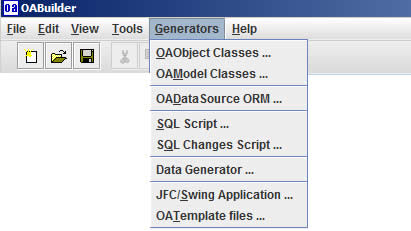

This menu shows the code generation that is included in OABuilder. We have also developed other generators and will be adding more in the future.
Note that these generators can be re-ran after an application has been created. It does
not use two-way generation, instead it uses templates and a way to include custom code into
the model that is then added to (re)generated code.

OAObject classes - observable pojo "looking" entity classes, could also are DAO. Each object in the model will have a Java class created for it. Also generated is classes for filters, and search objects.
OAModel classes - the model classes automate the wiring between the data objects, to form relationships like master/detail, linking, filtering, etc.
OADataSource ORM - automates the object to relational mapping so that the OA objects work with database. Queries, save, delete, cascading, references, etc. are all part of the functionality for OAObjects.
SQL Script - this will generate the DDL script used to create the database.
SQL Changes Script - OABuilder keeps track of all model changes and is able to generate a script that will then update the database.
Data Generator - this will generate sample data to use for testing, etc. We plan to have this be more specific in future releases.
JFC/Swing Application - this will create a fully functional UI application using the Java Swing components that have been extended to be Object Aware/bindable.
OATemplate files - this will take the template project and use it as the base for the new application.